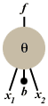
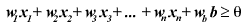
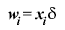
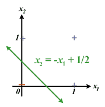
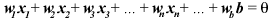

Perceptrons and basic neural networks By Eric Suh
Perceptrons are the easiest data structures to learn for
the study of Neural Networking. Think of a perceptron as
a node of a vast, interconnected network, sort of like a binary tree, although the network does not necessarily have to have
a top and bottom. The links between the nodes not only show the
relationship between the nodes but also transmit data and information,
called a signal or impulse. The perceptron is a simple
model of a neuron (nerve cell).
Since linking perceptrons into a network is a bit complicated, let's take a perceptron by itself. A perceptron has a number of external input links, one internal input (called a bias), a threshold, and one output link. To the right, you can see a picture of a simple perceptron. It resembles a neuron. Usually, the input values are boolean (that is, they can only have two possible values: on and off, 1 or 0, true or false), but they can be any real number. The output of the perceptron, however, is always boolean. When the output is on (has the value 1), the perceptron is said to be firing (the name comes from biology: when neurons send a signal in the brain, they are said to be firing). All of the inputs (including the bias) have weights attached to the input line that modify the input value. The weight is just multiplied with the input, so if the input value was 4 and the weight was -2, the weighted input value would be -8. The threshold is one of the key components of the perceptron. It determines, based on the inputs, whether the perceptron fires or not. Basically, the perceptron takes all of the weighted input values and adds them together. If the sum is above or equal to some value (called the threshold) then the perceptron fires. Otherwise, the perceptron does not. So, it fires whenever the following equation is true (where w represents the weight, and there are n inputs): 
The threshold is like a wall: if the "signal" has enough "energy" to jump over the wall, then it can keep going, but otherwise, it has to stop. Traditionally, the threshold value is represented either as the Greek letter theta (the symbol inside the circle in the picture above) or by a graphical symbol that looks like a square S: The main feature of perceptrons is that they can be trained (or learn) to behave a certain way. One popular beginner's assignment is to have a perceptron model (that is, learn to be) a basic boolean function such as AND or OR. Perceptron learning is guided, that is, you have to have something that the perceptron can imitate. So, the perceptron learns like this: it produces an output, compares the output to what the output should be, and then adjusts itself a little bit. After repeating this cycle enough times, the perceptron will have converged (a technical name for learned) to the correct behavior. This learning method is called the delta rule, because of the way the perceptron checks its accuracy. The difference between the perceptron's output and the correct output is assigned the Greek letter delta, and the Weight i for Input i is altered like this (the i shows that the change is separate for each Weight, and each weight has its corresponding input): Change in Weight i = Current Value of Input i × (Desired Output - Current Output) This can be elegantly summed up to: 
The delta rule works both if the perceptron's output is too large and if it is too small. The new Weight i is found simply by adding the change for Weight i to the current value of Weight i. Interestingly, if you graph the possible inputs on different axes of a mathematical graph, with pluses for where the perceptron fires and minuses where the perceptron doesn't, the weights for the perceptron make up the equation of a line that separates the pluses and the minuses.  For instance, in the picture above, the pluses and minuses represent the OR binary function. With a little bit of simple algebra, you can transform that equation in the diagram to the standard line form in which the weights can be seen clearly. (You get the following equation of the line if you take the firing equation and replace the "greater than or equal to" symbol with the equal sign).  This equation is significant, because single perceptron can only model functions whose graphical models are linearly separable. So, if there is no line (or plane, or hyperplane, etc. depending on the number of dimensions) that divides the fires and the non-fires (the pluses and minuses), then it isn't possible for the perceptron to learn to behave with that pattern of firing. For instance, the boolean function XOR is not linearly separable, so you can't model this boolean function with only one perceptron. The weight values just keep on shifting, and the perceptron never actually converges to one value. So, by themselves, perceptrons are a bit limited, but that is their appeal. Perceptrons enable a pattern to be broken up into simpler parts that can each be modeled by a separate perceptron in a network. So, even though perceptrons are limited, they can be combined into one powerful network that can model a wide variety of patterns, such as XOR and many complex boolean expressions of more than one variable. These algorithms, however, are more complex in arrangement, and thus the learning function is slightly more complicated. For many problems (specifically, the linearly separable ones), a single perceptron will do, and the learning function for it is quite simple and easy to implement. The perceptron is an elegantly simple way to model a human neuron's behavior. All you need is the first two equations shown above. |